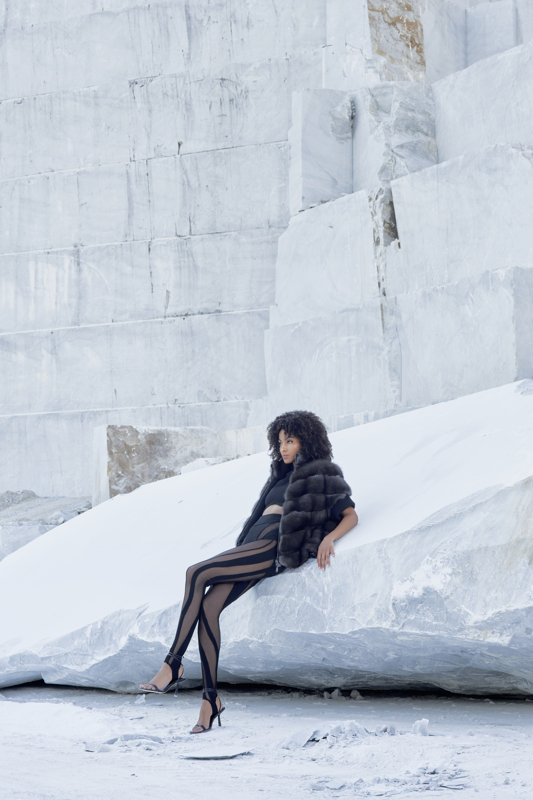
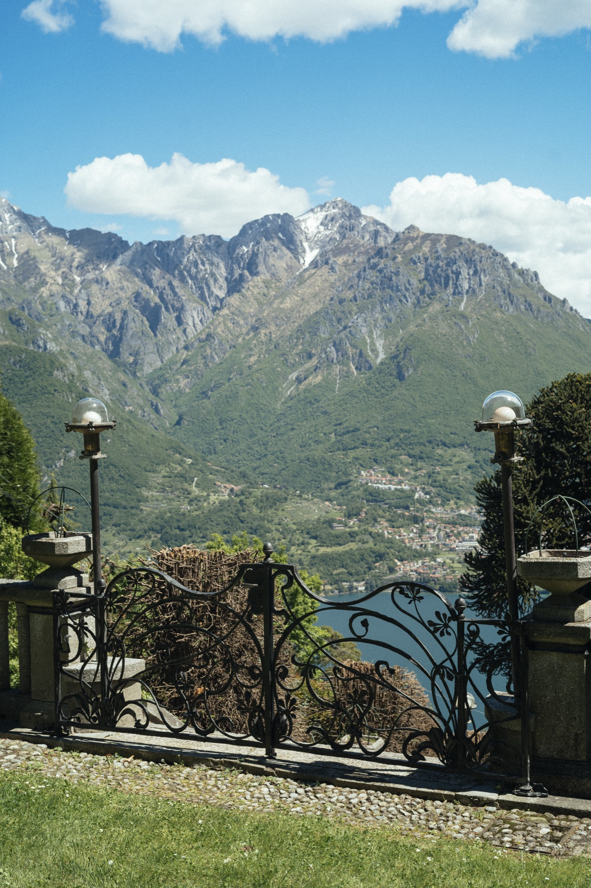
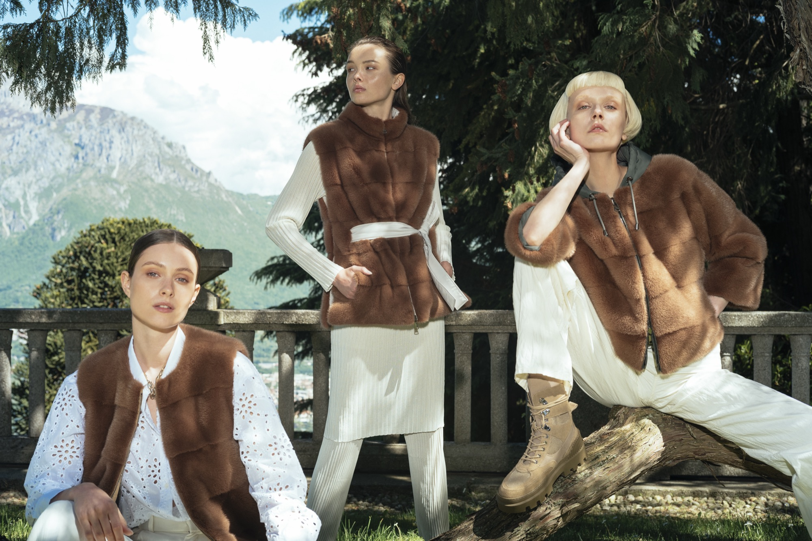

— Fureco · Sostenibilità
Il nostro impegno in immagini






LA prima azienda italiana certificata Furmark®
Fureco è LA prima azienda italiana ad aver adottato Furmark®: il programma internazionale di certificazione della pelliccia naturale sviluppato dall'International Fur Federation (IFF) con il supporto di alcuni tra i più importanti brand del lusso al mondo. Furmark® garantisce che ogni pelliccia certificata provenga da allevamenti che rispettano rigorosi standard di benessere animale, che l'impatto ambientale sia monitorato e ridotto, e che l'intera filiera — dall'allevamento al punto vendita — sia tracciabile e verificabile. Fureco ha scelto questa certificazione non per obbligo normativo, ma per convinzione: il lusso autentico non può permettersi zone d'ombra sulla provenienza dei suoi materiali. Ogni capo Fureco con etichetta Furmark® può essere tracciato dall'acquirente tramite un codice univoco che rivela origine geografica, allevamento, tipo di pelliccia e luogo di manifattura.
— VIDEO STORICO
— Fureco · Sostenibilità



— LA FILIERA